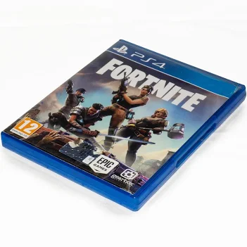
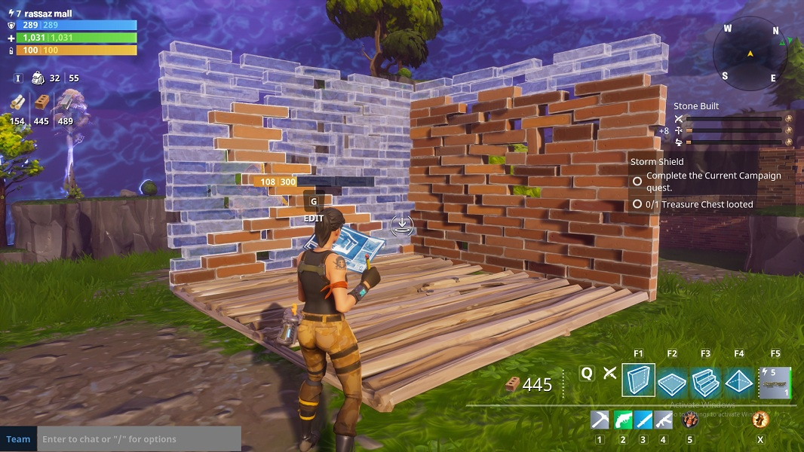
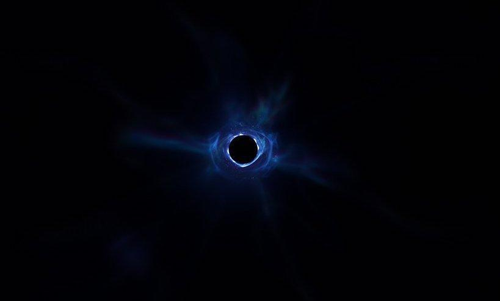

1. Los verdaderos orígenes

Actualmente Fortnite, su modo de juego principal es el Battle Royale, pero no es lo que realmente tenian pensado los desarolladores era lo siguiente; su principal juego era Salvar al mundo y en aquel entonces se puso de moda los battle royale, querian hacer un enganche hacia el juego que habian desarollado durante años.
Anunciado por primera vez en 2011 por Epic Games, Salvar el Mundo era un título cooperativo donde los jugadores debían recolectar recursos durante el día y construir fuertes para defenderse de hordas de monstruos durante la noche. El desarrollo fue extremadamente largo y complejo, sufriendo múltiples retrasos y cambios internos para adaptarse al novedoso motor gráfico Unreal Engine 4.
2. El boom del Battle Royale y la mecánica de construcción
En septiembre de 2017, viendo el arrollador éxito de juegos como PlayerUnknown's Battlegrounds (PUBG), el equipo de Epic Games desarrolló su propio modo Battle Royale en tan solo un par de meses. La decisión de lanzarlo de forma gratuita e independiente (modelo Free-to-Play) democratizó el acceso y supuso el mayor acierto de la historia de la compañía.
Lo que diferenció radicalmente a Fortnite de sus competidores fue la integración de las mecánicas de construcción heredadas de Salvar el Mundo. Los jugadores descubrieron rápidamente que podían usar las rampas y paredes no solo para crear refugios, sino como herramientas ofensivas, defensivas y de movilidad en pleno combate, elevando el nivel competitivo a un estándar nunca antes visto en los juegos de disparos.

3. Colaboraciones masivas y el Metaverso
Fortnite dejó de ser un simple videojuego cuando empezó a contar una historia en tiempo real a través de los cambios en su propio mapa. Todo comenzó con la caída de un meteorito, pero las temporadas fueron escalando hasta llegar a eventos masivos en vivo. Momentos icónicos como el concierto de Marshmello o el evento astronómico de Travis Scott lograron reunir a más de 12 millones de jugadores simultáneos en el mundo virtual.

El fin del Capítulo 1 marcó otro hito en la historia de internet: un agujero negro se tragó todo el juego, dejándolo inaccesible durante días y generando una expectación mundial. Hoy en día, gracias a modos como LEGO Fortnite, Rocket Racing, Fortnite Festival y las herramientas del Unreal Editor (UEFN), Fortnite ha trascendido el Battle Royale para convertirse en una plataforma de entretenimiento global, un lugar donde conviven franquicias tan dispares como Marvel, Star Wars o Dragon Ball.